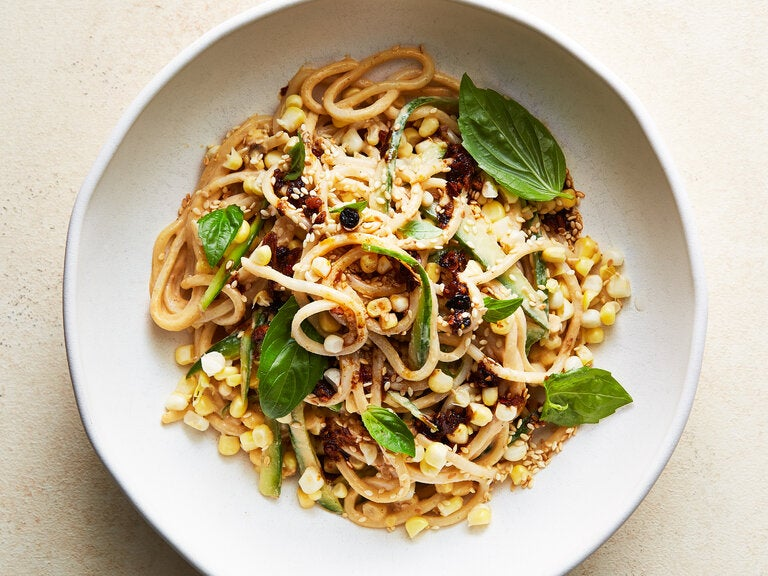

Pasta

Description
For a summertime update on a beloved Chinese dish,
cold sesame noodles are freshened up with crisp cucumbers,
raw corn and aromatic basil. The minimalism of the three-ingredient
sesame dressing belies its complex flavor. It brings together three
flavor-dense condiments: chile crisp, sesame oil and sesame paste.
Available from Asian grocery stores (or online), Chinese or Japanese sesame
paste is similar to tahini. It is made from toasted sesame seeds, so the finish
is darker, nuttier and stronger. If you can’t get a hold of sesame paste, substitute
with smooth peanut butter or tahini. The noodle choice here is flexible to make space
for those with dietary restrictions;use any type of thick rice or wheat noodle.
Ingredients
- Salt
- 10 ounces dried thick rice or wheat noodles
- 4 Persian cucumbers (about 11 ounces)
- 1/4 cup Chinese or Japanese sesame paste or tahini
- 4 teaspoons toasted sesame oil
- 4 to 6 teaspoons chili crisp
- 2 ears corn, kernels removed
- Toasted white sesame seeds
- Handful of basil leaves
Steps
- Bring a large pot of salted water to a boil. Add the
noodles and cook according to packet instructions until al dente.
Drain, refresh under cold water and drain again.
- Halve cucumbers lengthwise. Using a small spoon, scrape out the
seeds and discard. Cut cucumber into thin strips.
- Make the sesame sauce: Place the sesame paste into a bowl and
add the sesame oil and chile crisp. Add ¼ cup of water and whisk until
smooth and pourable. If the sauce is too thick, add another splash of water,
until the sauce feels loose enough to coat the noodles. (The sauce can be prepared
1 day ahead, but it will thicken up over time. To loosen it up, whisk with a
tablespoon or two of water.)
- Place the noodles into a large bowl and add the sesame sauce, cucumber and corn.
Toss to coat the noodles.
- To serve, top with sesame seeds, basil leaves and a few drops of chile crisp.